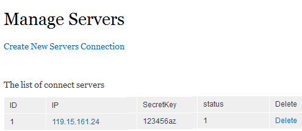
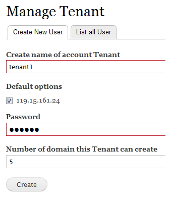
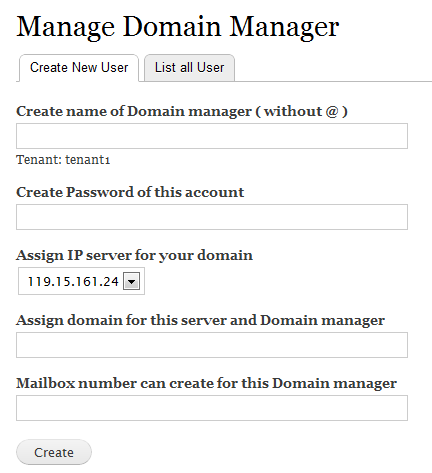
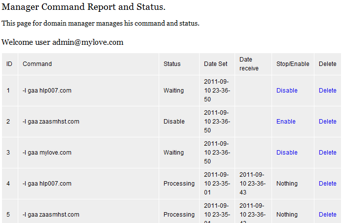

Zimbra as a service |
Hướng dẫn sử dụng ZaaS
Sau khi thiết đặt xong cho Zimbra server và Drupal CMS ( Tạo các user mới: tenant hay domain manager), và các kết nối mới (gồm IP, mật khẩu) thành công, chúng ta bắt đầu làm việc với ZaaS. ZaaS có những tính năng tương ứng với mỗi kiểu user.
- SuperAdmin
- Tenant
- Domain manager
- Command status - Trạng thái lệnh
- Manage MailBox - Quản lý hộp thư
- Manage Alias - Quản trị Alias
- Manage Group - Quản trị Group
SuperAdmin
Manage Server connections - Quản lý kết nối
Một Zimbra server muốn truy cập tới CMS Drupal này để lấy lệnh, cần phải vượt qua được kiểm tra mật khẩu và IP
Và một lệnh được tạo bởi Drupal cần xác định được IP của máy chủ Zimbra để trả lệnh.
Mỗi domain cần xác định ứng với mỗi IP và mật khẩu, ví dụ:

Để tạo mới, nhấn vào Create New Servers Connection, và nhập vào IP, domain, passkey.
Để sửa, nhấn vào IP link.
Để xóa, nhấn vào Delete link trong cùng hàng.
Manage Tenant - Quản lý Tenant
Sau khi tạo một kết nối tới server. Việc tiếp theo là ta tạo ra các Tenant. Tenant sẽ là người quản lý 1 nhóm các domain nào đó, do tự Tenant đó quản lý. Ví dụ tạo mới 1 tenant:

Chọn tên cần tạo cho Tenant. Nếu trong Drupal có sẵn tài khoản này rồi thì ZaaS sẽ không tạo user mới. Nếu chưa có, mật khẩu sẽ là cần thiết để tạo mới user. Sau đó, user này sẽ được chọn IP mặc định để chạy các dịch vụ mail trên đó. Và cuối cùng là số lượng domain mà Tenant này có thể tạo mới ra.
Tenant
Manage Domain manager - Quản lý Domain manager
Công cụ này dùng để Tenant gán quyền quản lý 1 domain cho Domain manager.
Tenant có thể tạo Domain managers - người mà điều khiển với domain nào và định mức bao nhiêu (số lượng mailbox được tạo ra).
Sau khi được Super Admin tạo tài khoản, Tenant đăng nhập và sẽ thấy có chức năng này trong menu.
Domain manager ko có quyền truy cập tới trang này!
Dưới đây là form mới để gán quyền cho user

- "Create name of Domain manager ( without @ )": Tên của account bạn muốn gán domain. Nếu trong Drupal có sẵn tài khoản này rồi thì ZaaS sẽ không tạo user mới. Nếu chưa có, mật khẩu sẽ là cần thiết để tạo mới user. Chú ý ko có @, username sẽ tự động thêm dạng ten@domain.
- "Assign domain for this server and Domain manager": domain mà bạn muốn account này quản lý. Nếu hệ thống Zimbra chưa có sẵn, sẽ tự động thêm vào danh sách domain trên server đó!
- "Assign IP server for your domain": IP (server) mà domain Tenant muốn chạy.
- "Mailbox number can create for this Domain manager": Số lượng mailbox mà user này có thể tạo ra được
Domain manager
Command status - Trạng thái lệnh
Công cụ này hiển thị các lệnh mà user đó đã tạo ra, như tạo, xóa, sửa,... Gồm cả các lệnh chưa thực thi và đã thực thi.
Ở đây sẽ liệt kê tất cả các lệnh trong CSDL. Có vài kiểu lệnh, với các trạng thái như:
- Waiting: vẫn đang chờ để gửi tới Zimbra server, nghĩa là nó vẫn chưa được thực thi.
- Processing: Zimbra server đã nhận được lệnh, và đang thực thi nó
- Done: Nghĩa là lệnh đã được thực thi xong!
Xem ảnh để biết thêm các chi tiết:

Như vậy, nếu lệnh vẫn trong trạng thái là waiting, thì bạn có thể Ngừng nó, hay xóa nó nếu bạn ko muốn nó thực thi, và có thể Cho phép tiếp tục sau khi đã ngừng!
Manage MailBox - Quản lý hộp thư
Hộp thư hay tài khoản, là nơi mà người dùng sẽ nhận và gửi thư.
Lần đầu tiên sử dụng, bạn cần cập nhật nó (hay khi bạn muốn làm mới), nhấn vào Update List Mailbox, và chờ máy chủ zimbra thực thi lệnh này. Nó sẽ liệt kê tất cả các tài khoản mà domain thuộc quyền của bạn (Tenant hay Domain manager user).
Bạn sẽ thấy "Just updated, please wait until it is processed.", và chờ khoảng 1 vài phút, rồi bấm link trở lại Manager Mailbox, bạn sẽ thấy tất cả tài khoản của bạn.
Để tạo mới, nhấn Create New Mailbox, rồi chọn domain mà bạn sở hữu. Bạn có thể đặt 1 số thông tin cơ bản như Tên hiển thị, mật khẩu, định mức hòm thư.
Nếu bạn muốn sửa/ xóa thì nhấn vào link edit/delete. Sau khi xác nhận, nhấn vào Update List Mailbox và chờ!
Manage Alias - Quản trị Alias
Giống như với với quản trị hòm thư. Bạn chỉ được tạo các Alias và tài khoản gốc mà domain thuộc phần sở hữu của bạn!
Manage Group - Quản trị Group
Group hay Distributions list là 1 email đại diện, qua đó nó sẽ phân phối lại email tới các địa chỉ trong danh sách khi nó nhận được email.
Có vài điểm khác, mặc dù cơ bản là vẫn giống các tính năng trên.
Đầu tiên bạn cần lấy danh sách Group (nhấn vào Update list now hay Update list group) để xem các nhóm của bạn sở hữu.
Tiếp theo, khi bạn click vào bất kì cái nào, nó sẽ ra các danh sách email thuộc nhóm này. Tuy nhiên bạn PHẢI CẬP NHẬT (Update list) để lấy các account này ( bằng cách kích vào link Update list now)!
Để tạo mới, nhấn vào Add email to this group, hoặc sửa, xóa bất kì tài khoản nào.
Mỗi lần thao tác xong, bạn cần nhấn vào cập nhập danh sách!